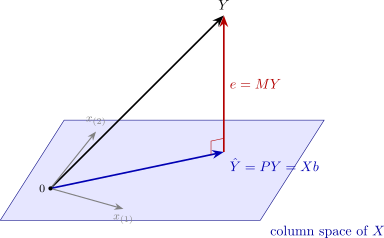

6.6 The geometry of least squares
Think of \(Y\) and the \(k\) columns of \(X\) as vectors in \(\mathbb R^n\). Every possible fitted value \(Xc\) is a linear combination of the columns of \(X\), so the candidate fits fill out the \(k\)-dimensional column space of \(X\). Least squares picks the point \(\hat Y\) of that space closest to \(Y\), and Theorem 6.2.2 says that the error \(e = Y - \hat Y\) is perpendicular to the whole space. \(\hat Y = PY\) is the orthogonal projection of \(Y\) onto the column space, \(P\) is the projection matrix, and \(e = MY\) is the projection onto the orthogonal complement, which has dimension \(n - k\) (Figure 8).

The geometry explains several earlier facts at once. Pythagoras’ theorem in \(\mathbb R^n\) is the decomposition of the sum of squares. When the vectors are measured as deviations from their means, \(R^2\) is the squared cosine of the angle between \(M_0Y\) and \(M_0\hat Y\), which is why \(R^2\) is the squared correlation between \(Y\) and \(\hat Y\). Adding a regressor enlarges the subspace, so the nearest point can only get nearer, which is Theorem 6.3.2. The Frisch–Waugh–Lovell theorem is the statement that projecting in two stages, first onto the space of \(X_1\) and then onto what is left of \(X_2\), reaches the same point as projecting onto the whole space at once. And the fitted values depend only on the column space, not on the particular columns chosen to span it, so rescaling or recombining the regressors (Problem 5.7.6) leaves \(\hat Y\), \(e\) and \(R^2\) unchanged.
Questions on this section
Stuck on something here? Ask below and it stays attached to this topic.